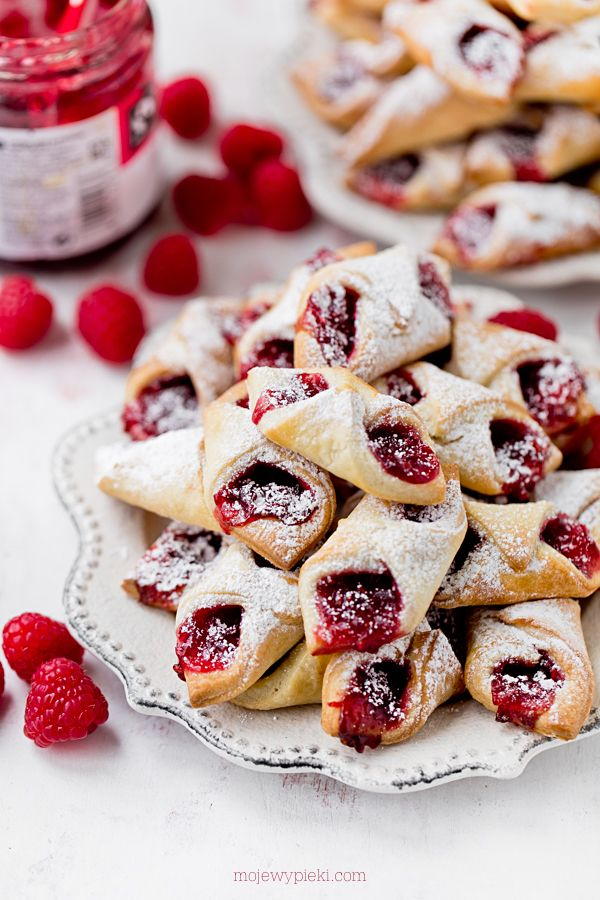

Polish Kolaczki

This Polish kołaczki cookie recipe is made with a cream cheese dough that bakes up buttery and flaky. Kołaczki can be round,
square or diamond-shaped, and the dough can be flaky or yeast-risen, and the spelling varies widely.
Since they are a little time consuming to make, they are usually offered for holidays or special occasions, but they're not
difficult, so most dedicated bakers make them year-round.
Fillings of choice include apricot, raspberry, prune, almond, poppy seed, and sweet cheese. Anything goes—strawberry,
blueberry, apricot, even pineapple. Try to avoid going with jam as it is typically not thick enough. Look for products
labeled cake and pastry filling in the baking aisle at the grocery store. Some stores even sell the filling on its own
in their bakery departments around the holidays.
Ingredients
- 8 ounces cream cheese (room temperature)
- 1 1/2 cups salted butter (room temperature)
- 3 cups all-purpose flour
- Granulated sugar (for rolling out dough)
- Confectioner's sugar (for rolling out dough)
- 8-10 ounces cake and pastry filling (apricot, strawberry, raspberry, etc.)
- 1 large white egg
- 1 cup sifted confectioner's sugar
Steps
- Gather the ingredients.
- In a large bowl, beat cream cheese with butter until light and fluffy.
- Add the flour, 1 cup at a time, and mix well.
- Wrap dough in plastic and refrigerate for at least 1 hour.
- Heat oven to 350F. Roll out dough to a 12 x 18-inch rectangle—1/4-inch
thick—on a silicone mat or a surface that has been dusted with equal
parts confectioners' and granulated sugars (not flour), because the
granulated sugar will act as ball bearings and help keep the dough
from sticking.
- Cut into 2-inch squares. Place 1/2 to 1 teaspoon filling on center
of each square. Brush a tiny bit of beaten egg white on one corner
and press the opposite corner on it, pressing the dough together
lightly to seal.
- Using a spatula, transfer the filled cookies to a parchment-lined
sheet pan and bake for 15 minutes (longer if baking from frozen)
or until corners start to brown.
- Using a spatula, remove cookies from the baking sheet and transfer
to a wire rack to cool completely before dusting with confectioners’
sugar. Serve and enjoy!